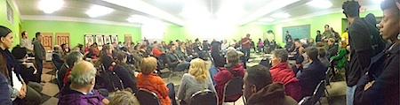

Tension is building here in Ferguson, Friends.
An announcement about whether the Ferguson police officer -- who shot and killed Mike Brown on August 9 -- will be charged with a crime is uncertain, while the community here continues to come under indictment.
In a stunning address from Missouri Gov. Jay Nixon, it was not local and state police who were admonished for impending acts of violence -- despite consistent violence and repression directed at peaceful protesters and civilians -- but the people of Ferguson.
It's hard to communicate what it's like to be here in Ferguson.
People have been shot at, tear gassed, arrested without cause, trapped in their homes, seen residential streets militarized with tanks and assault rifles, cordoned off from their community, and are now being treated as criminals for exercising their basic rights.
Support nonviolent resistance in Ferguson
Whatever happens in the trial of Ferguson police officer Darren Wilson, the community will continue to demand justice and accountability from their elected officials and law enforcement.
Yet the dismissive and punitive attitude of Missouri officials seems likely to lead to more unlawful arrests of peaceful civilians.
Please donate to the Missouri legal support fund for those arrested in Ferguson.
We're supporting the work of Missourians Organizing for Reform and Empowerment (MORE), who are coordinating arrest support and legal training for those participating in Ferguson demonstrations.
Make a donation to MORE and ensure anyone unjustly arrested in Ferguson can be quickly bailed out.
FOR continues nonviolence training

FOR has created a movement house that has served as a landing ground for doctors, lawyers, and activists from around the country who are deeply committed to serving the people of Ferguson. It has become a hotbed of nonviolence training for community members facing militarization and police violence.
I'm here in Ferguson supporting the work of FOR Fellow Rev. Osagyefo Sekou, who has already led nonviolent civil disobedience training for more than 200 clergy and faith leaders.
FOR National Council member Sahar Alsahlani and I are contributing to local community organizing efforts, as well as helping to arrange for elders like Dr. Cornel West and Harry Belafonte to travel to Ferguson and lend their wisdom (as well as national media attention) to the work of local activists.
While we believe arrest and legal support to be the most pressing financial need at the moment, for those who are able we encourage you to make an additional donation to FOR to support continuing these nonviolence trainings.
Support racial justice wherever you are
 In addition to supporting those who are arrested in Ferguson, there are three ways you can get involved: In addition to supporting those who are arrested in Ferguson, there are three ways you can get involved:
Attend solidarity events in your community. Although we haven't been able to find a national directory, Facebook and Twitter are a good place to look for upcoming events in your area (search for terms like Ferguson or Mike Brown). Even more importantly, use these events to make connections with other people or organizations working for racial justice -- because we know the racism in Ferguson isn't unique in our country.
Donate supplies online to organizers in Ferguson. Many organizers may be spending days on the street in peaceful demonstration -- in November. Using the mechanism of an Amazon wedding registry, you can directly purchase particular supplies for Ferguson organizers.
Post a #DeepAbidingLove message on Twitter. Following weeks of community militarization, we need to begin collective healing. The Deep Abiding Love project is sharing messages of militant nonviolent direct action and love.
For justice, and with hope,
 Gretchen Honnold Gretchen Honnold
Training Coordinator
Fellowship of Reconciliation
Images courtesy of Ferguson October and Missourians Organizing for Reform and Empowerment. |